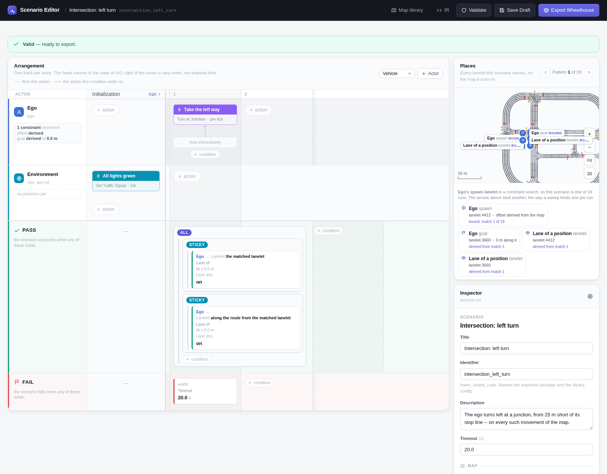
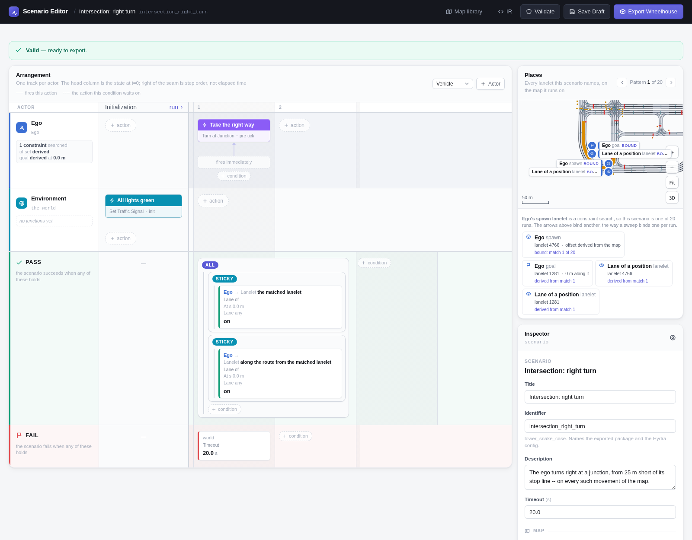
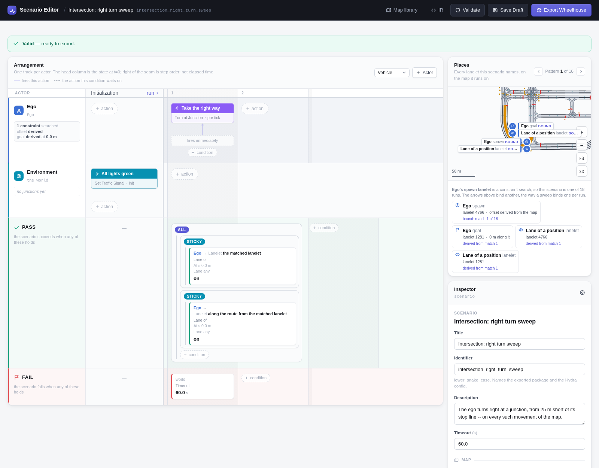
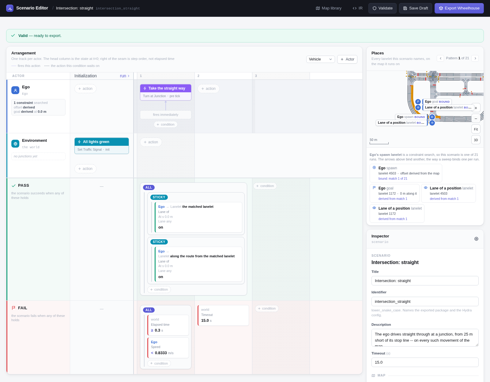

Intersection Passing¶
The ego approaches a junction from 25 m short of its stop line and takes one movement through it -- left, right or straight on -- on every junction movement of that kind on the map. Every light is green, so nothing stops it.
# Every case on the map, one run each
uv run scenario --multirun hydra/sweeper=lanelet_constraint \
scenario=intersection_passing/left_turn map=<map>
Scenario¶
| Ego | Constraint search: a junction lanelet whose turn_direction is the movement and which has a stop line -- any, or a traffic light's (see the variants) -- excluding the map's lanelets with no 3D model, except from a standstill. Position before stop line: 25 m short of it -- which walks back onto the lane that approaches the junction, where the run starts. Goal from the search: the lanelet after the junction lanelet. |
| Initialization | Every traffic light green. |
| Ego, from the start | Turn at the next junction, in the movement's direction. |
| Pass | The ego has been on the road of the junction lanelet (the matched lanelet), and on the road of the lane it comes out on (along the route, one step on). Any lane of each road counts. |
| Fail | The timeout -- and, going straight, slowing below 3 km/h after 0.3 s. |
Variants¶

scenario=intersection_passing/left_turn -- turn_direction: left, a
stop line (a signal's or a stop sign's), 20 km/h, 20 s.
Town10HD_Opt, the first case: the search matched lanelet 4412 and the ego starts on lanelet 5975, 15.2 m along it. Result: PASSED.

scenario=intersection_passing/right_turn -- turn_direction: right, a
stop line, 20 km/h, 20 s.
Town10HD_Opt, the first case: the search matched lanelet 4766 and the ego starts on lanelet 3235, 7.0 m along it. Result: PASSED.

scenario=intersection_passing/right_turn_sweep -- turn_direction:
right at a signalised junction only (a traffic-light stop line), starting
at 0 km/h, so the ego has to pull away as well as steer; 60 s. It does
not leave out the lanelets with no 3D model.
Town10HD_Opt, the first case: the search matched lanelet 4766 and the ego starts on lanelet 3235, 7.0 m along it. Result: PASSED.

scenario=intersection_passing/straight -- turn_direction: straight at
a signalised junction only, 5 km/h, 15 s. Also fails if the ego drops below
3 km/h after 0.3 s: with every light green it never has to stop.
Town10HD_Opt, the first case: the search matched lanelet 4503 and the ego starts on lanelet 860, 3.0 m along it. Result: PASSED.
Parameters¶
| Parameter | Left | Right | Right, standstill | Straight |
|---|---|---|---|---|
| Junction lanelet | turn_direction: left |
right |
right |
straight |
| Stop line | any | any | a traffic light's | a traffic light's |
| No-3D-model lanelets left out | yes | yes | no | yes |
| Spawn | 25 m before it | 25 m | 25 m | 25 m |
| Ego initial speed | 20 km/h | 20 km/h | 0 km/h | 5 km/h |
| Minimum speed | -- | -- | -- | 3 km/h, after 0.3 s |
| Timeout | 20 s | 20 s | 60 s | 15 s |